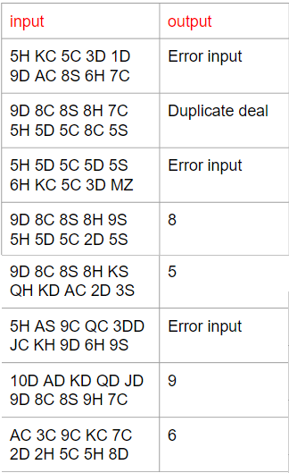

撲克牌梭哈(進階題1)
Suit: Spade (S), Heart (H), Diamond (D), Club (C). S > H > D > C.
Face: A, 2, ..., J, Q, K. The point of 2~10 is 2~10,
A is 14, and J is 11, Q is 12, K is 13.
Type 編號:
1. 散牌 : 單一張牌。
2. 一對 : 兩張數字一樣為 Pair。
3. 兩對 : 2 組 Pair 的牌為 Two pair。
4. 三條 : 三張一樣數字的為 Three of a Kind。
5. 順子 : 數字連續的 5 張牌為 Straight,包括[2, 3, 4, 5, 6],..,
[11, 12, 13, 14, 2], [12, 13 ,14, 2, 3], [13 ,14, 2, 3, 4], [14,2, 3, 4, 5]。
6. 同花 : 五張同一花色的牌為 Flush。
7. 葫蘆 : Three of a Kind 加一個 Pair 為 Full House。
8. 四條 : 四張一樣數字為 Four of a Kind。
9. 同花順 : 數字連續的 5 張且花色一樣為 Straight Flush。
撲克牌梭哈(進階題1)
輸入說明:
輸入兩組牌,判斷哪組牌型編號較大,輸出編號。
1.每一列輸入一組牌 5 張撲克 encode,空格分開。
(encode : Face+Suit. 10S is Spade 10, 7D is diamond 7, QC is club Q.)
2. 檢查任一組是否輸入錯誤,若錯誤,output "Error input"。
3. 檢查所有牌是否有重複,若重複,output "Duplicate deal" 。
4. "Error input"和"Duplicate deal"同時發生則輸出"Error input"
輸出說明 :
1. 根據輸入,輸出相對應的牌型,1~9 整數,代表牌型編號; 以「最大牌型輸出」。
2. 數字連續定義為:K(13) 和 A(14) 有相連,A(14) 和 2 有相連,依此類推。
撲克牌梭哈(進階題1)

撲克牌梭哈(進階題1)
1. 散牌 6. 同花
2. 一對 7. 葫蘆
3. 兩對 8. 四條
4. 三條 9. 同花順
5. 順子

Tips
#include<stdio.h>
#include<stdbool.h>
int card_type(int arr[]); // 找出該組牌的最大牌型
int main()
{
char Face[] = {'2','3','4','5','6','7','8','9',' ','J','Q','K','A'}; // 把10略過可以讓陣列保持一維，另外作判斷看數字是否為10
char Suit[] = {'C','D','H','S'};
char set[10][5]; // 以字串方式儲存牌組
int set_int[10] = {0}; // 把牌組存成整數
int set_1_int[5], set_2_int[5]; // 第一組牌, 第二組牌
// 輸入兩組牌
// 把牌組轉換成對應數字 Face * 10 + Suit，要注意數字10
// 把set_int分成兩個字串set_1_int、set_2_int
// 把set_1_int、set_2_int由小到大排序
// 把set_1_int、set_2_int丟到card_type，取得各自的最大牌型編號
// 比較哪個牌型較大，輸出最大牌型編號
return 0;
}
int card_type(int arr[])
{
int set[5]; // 儲存傳入的陣列
bool is_type[10] = {false}; // 牌組是否形成牌型
int same_num[4] = {0}; // 從index後面算有幾張是相同的數字
is_type[1] = true; // 無牌型為散牌
// 判斷是否為 順子(5)
// 判斷是否為 同花(6)
// 判斷是否為 同花順(9) = 同花(6) + 順子(5), 若是直接回傳 9
// 計算牌組中有多少張數字一樣的牌,
for(int i = 0; i < 4; i++)
{
for(int j = i + 1; j <= 4; j++)
{
if(set[i] / 10 == set[j] / 10)
{
same_num[i]++;
}
}
i += same_num[i];
}
// 根據same_num可以判斷是否為四條(8)、三條(4)、兩對(3)、一對(2), 若是四條直接回傳 8
// 判斷是否為 葫蘆(7) = 三條(4) + 一對(2), , 若是直接回傳 7
// 若是牌型 7、8、9 前面已return，且要輸出最大牌型，所以從牌型6開始由大到小檢查是否符合
}
Tips
Face * 10 + Suit
例 :
QH KD AC 2D 3S
122 131 140 21 33 排序後 -> 21 33 122 131 140
[11, 12, 13, 14, 2] -> 20, 110, 120, 130, 140 (110 - 20 = 90)
[12, 13, 14, 2, 3] -> 20, 30, 120, 130, 140 (120 - 30 = 90)
[13, 14, 2, 3, 4] -> 20, 30, 40, 130, 140 (130 - 40 = 90)
[14, 2, 3, 4, 5] -> 20, 30, 40, 50, 140 (140 - 50 = 90)
可用這點來判斷牌組是否為順子。
Tips
Face * 10 + Suit
例 :
9D 8C 8S 8H 9S
91 80 83 82 93 排序後 -> 80 82 83 91 93
for(int i = 0; i < 4; i++)
{
for(int j = i + 1; j <= 4; j++)
{
if(set[i] / 10 == set[j] / 10)
{
same_num[i]++; // 跳過相同數字的牌
}
}
i += same_num[i];
}
same_num[] = {2,0,0,1}, 2 表示排序後index = 0 的後面有兩張牌與它數字相同，
且same_num[]中有兩個非0數字，就代表有兩對。